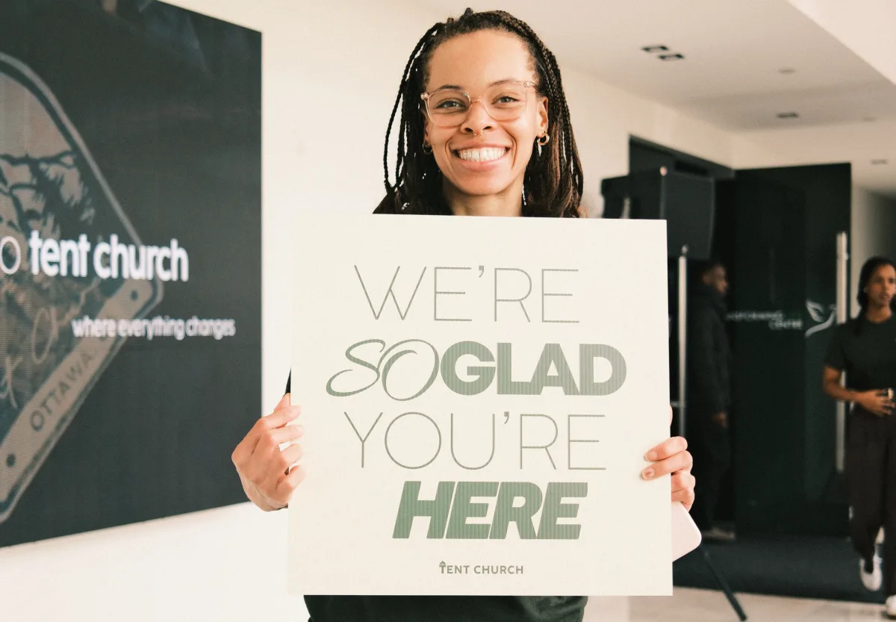

First time at Tent?
Plan My Visit.
We know visiting a church for the first time can feel like a lot. Here is everything you need to feel prepared, welcomed, and at home before you arrive.
Service Times
Ottawa Valley meets Sundays at 2pm and Thursdays at 7:30pm. Toronto meets Sundays at 5pm and Fridays at 9pm. Montreal meets Sundays at 5pm.
Come As You Are
Tent Church is a place for all people to come and experience God. No matter your background or story, everyone is welcome here.
Bring the Family
Families are welcome. Our team will help you find the right space, get settled, and feel comfortable from the moment you walk in.
What to expect
A Sunday at the Tent.

Worship
Our services are filled with songs of praise and worship that create atmospheres for people to encounter God.
The Word
You can expect an encouraging, hope-filled message about Jesus with practical teaching you can carry into the week.
The Spirit
Our services are filled with moments of the spontaneous flow of the Spirit where people encounter God and atmospheres are created for miracles.
Community
We have a welcoming, friendly atmosphere where people can fellowship, build connection, and feel like they belong.
Getting settled
Before you walk through the door.
Give yourself a few extra minutes to park, find the entrance, and get comfortable. If you are unsure where to go, look for someone from the team and let them know it is your first time.
There is no pressure to have everything figured out. We are simply glad you are coming, and we want your first visit to feel easy.


What about my kids?
Kids should be able to enjoy church too. If you are visiting with children, our team can help you get oriented, find the right place, and answer any questions when you arrive.
Safety, cleanliness, and care matter to us, so families can participate in service with confidence and peace.

We would love to meet you.
Whether you are exploring faith, returning to church, or looking for a place to grow, there is room for you at Tent.
Connect with us